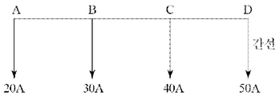
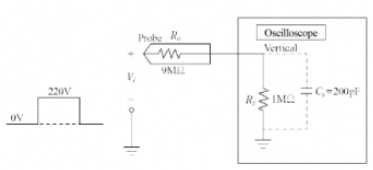
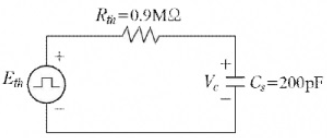
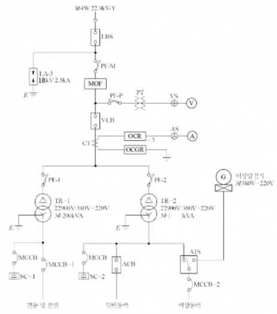
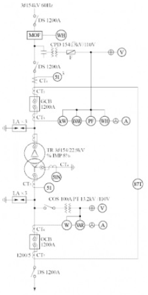

① 명칭:
② 사용 용도:
① 명칭: 자동부하 전환 개폐기
② 사용용도: 사전에 이중전원을 확보하여 주전원이 정전되거나 가동치 이하로 전압이 떨어질 경우 예비전원으로 자동으로 전환 시킴으로써 수용가에 안정된 전원을 공급하도록 한다.
| 점수 | 세부기준 |
|---|---|
| 4점 | 두 문항이 모두 정답인 경우 4점 |
| 2점 | 두 문항 중 한 문항이 정답인 경우 2점 |
ALTS는 Auto Load Transfer Switch의 약자로 자동부하 전환 개폐기라고 하며 병렬 동작 같이 감자기 정전이 되었을 때 문제가 발생할 수 있는 장소에 설치한다.
정답
①
②
③
| 점수 | 세부기준 |
|---|---|
| 5점 | 3문항이 모두 정답인 경우 5점 획득 |
| 3점 | 2문항이 정답인 경우 3점 획득 |
| 2점 | 1문항이 정답인 경우 2점 획득 |
(해설) 서술 암기형 / 난이도 중
| 점수 | 세부 기준 |
|---|---|
| 8~0점 | 한 문항이 맞을 때마다 1점씩 획득 |
| 구분 | 지중 전선로 | 가공 전선로 |
|---|---|---|
| 장점 |
・외부 기상 여건 등의 영향이 거의 없다. ・차폐 케이블 사용으로 유도 장해가 경감된다. ・충전부의 절연으로 안전성이 확보된다. ・지하 시설로 설비 보안 유지가 용이하다. ・쾌적한 도심 환경을 조성할 수 있다. |
・지중 설비에 비해 공사비가 저렴하다. ・고장점 발견과 복구가 용이하다. ・발생열의 냉각이 수월해 송전 용량이 높은 편이다. ・신규 수요에 신속하게 대처할 수 있다. |
| 단점 |
・건설 비용이 고가이다. ・외상 사고, 접속 소 시공 불량에 의한 영구 사고가 발생한다. ・고장점 발견이 어렵고 복구가 어렵다. ・발생열의 구조적 냉각 장해로 송전 용량이 가공 전선로에 비해 낮다. |
・전력선 접촉이나 기상 조건에 따라 정전 빈도가 높다. ・유도 장해가 발생한다. ・충전부의 노출로 적정 이격 거리의 확보가 필요하다. ・지상 노출로 설비의 보안 유지가 곤란하다. |

각 지점을 급전점으로 하였을 경우 전력손실은 키르히호프의 제1법칙(KCL)을 사용하여 다음과 같이 구할 수 있다.
문제의 조건에 따라 \(R_{AB} = R_{BC} = R_{CD} = R\)이다.
A점: \(P_A = (30 + 40 + 50)^2 R_{AB} + (40 + 50)^2 R_{BC} + (50)^2 R_{CD} = 25,000R\) [W]
B점: \(P_B = (20)^2 R_{AB} + (40 + 50)^2 R_{BC} + (50)^2 R_{CD} = 11,000R\) [W]
C점: \(P_C = (20)^2 R_{AB} + (20 + 30)^2 R_{BC} + (50)^2 R_{CD} = 5,400R\) [W]
D점: \(P_D = (20)^2 R_{AB} + (20 + 30)^2 R_{BC} + (20 + 30 + 40)^2 R_{CD} = 11,000R\) [W]
| 점수 | 세부기준 |
|---|---|
| 5점 | 계산과정과 정답이 모두 맞은 경우 5점 획득 |
| 0점 | 계산과정이나 정답에 오류가 있는 경우 0점 |
다음의 전력손실식을 이용하여 각 점의 전력손실을 구한 후 전력손실이 가장 작은 지점을 답으로 고르면 된다.
\[ P_i = I^2R \]
① 잠동현상:
② 잠동현상을 방지하기 위한 방법:
①
②
③
해설) 서술 암기형 / 난이도 中
① 잠동현상: 무부하 상태에서 정격 주파수 및 정격 전압의 110[%]를 인가하였을 경우 계기의 원판이 1회전 이상 회전하는 현상이다.
② 방지 대책
① 기계적 강도가 커야 한다.
② 과부하 내량이 커야 한다.
③ 온도나 주파수 변화에 보상이 되어야 한다.
| 점수 | 세부기준 |
|---|---|
| 7점 | (1), (2)번이 모두 맞은 경우 7점 획득 |
| 4~0점 | (1)번이 모두 맞은 경우 4점 획득, 단, 두 소문항 중 하나만 맞은 경우 2점 획득 |
| 3점 | (2)번의 소문항 1개가 맞을 때마다 1점씩 획득 |
\[ E_0 = 24.3m_1 m_0 \delta d \log{\frac{D}{r}} [kV] \]
①
②
①
②
해설: 단순 이론형 + 서술 암기형 / 난이도 中
상대 공기밀도
전선표면의 상태계수
코로나에 의한 장해의 종류
정답 ① 전력이 손실된다. ② 통신선 유도장해가 발생된다.
정답 ① 굵은 전선을 사용한다. ② 복도체를 사용한다.
| 점수 | 세부기준 |
|---|---|
| 6점 | (1)~(4)번이 모두 맞은 경우 6점 획득 |
| 4점 | (3), (4)번이 맞은 경우 각각 2점씩 획득, 단, 소문항 1개당 1점씩 부분점수 획득 |
| 2점 | (1), (2)번은 한 문항이 맞을 때마다 1점씩 획득 |
[코로나 임계전압 공식]
\(E_0 = 24.3 m_0 m_1 \delta log_{10} \frac{D}{r}\) [kV]
\(m_0\): 전선표면의 상태계수
\(m_1\): 날씨에 관계하는 계수 (맑은 날 1.0, 우천 시 0.8)
\(\delta\): 상대 공기밀도
d: 전선의 지름[cm]
r: 전선의 반지름[cm]
D: 전선의 등가 선간거리[cm]
[배점: 5점]
정답해설) 단순 계산형 / 난이도 下
정답\[ t = \frac{0.344 \times 250 \times 10,000}{860 \times 500 \times \frac{1}{2}} = 4 [h] \]
정답 4시간
부분점수
| 점수 | 세부기준 |
|---|---|
| 5점 | 계산과정과 답이 모두 맞으면 5점 획득 |
| 0점 | 계산과정과 답에 오류가 있으면 0점 |
접근 POINT
화력 발전에서 연료의 열효율에 관한 문제로 효율 공식으로부터 소요시간을 구할 수 있다. 줄의 법칙 (1[J] = 0.24[cal])에 의한 에너지와 열량의 변환 공식 1[kWh] = 860[kcal]를 적용한다.
해설
발전기 열효율
\[ \eta = \frac{\text{출력}}{\text{입력}} = \frac{860Pt}{BH} \times 100 [%] \]
\[ B: 연료량[L/h], H: 열량 [kcal/L], P: 출력 [kW], t: 시간[h] \]
발전기 입력 = 투입 연료량[kcal], 발전기 출력 = 발생 전력량[kW]
이때 1[kWh] = 860[kcal] 적용한다.
\[ 1[kWh] = 1[kW] \times 3600[s] = 3600[kJ] = 864[kcal], \]
(1[Ws] = 1[J], 1[J] = 0.24[cal])
해설) 서술 암기형 / 난이도 中
중성선: 다선식 전로에서 전원의 중성극에 접속된 전선이다.
분기회로: 간선에서 분기하여 분기 과전류차단기를 거쳐서 부하에 이르는 사이에 설치되는 배선이다.
등전위본딩: 등전위를 형성하기 위해 전선 간을 전기적으로 접속하는 것이다.
| 점수 | 세부기준 |
|---|---|
| 6점 | (1), (2), (3)번이 모두 맞은 경우 6점 획득 |
| 2점 | (1), (2), (3)번 중 하나만 맞은 경우 2점 획득 |
해설) 복합 계산형 / 난이도 중
\[ 수용률 = \frac{최대 수용 전력}{설비 용량} \times 100 = \frac{240}{450 \times 0.8} \times 100 = 66.67 [\%] \]
정답 66.67 [%]
\[ 부하율 = \frac{평균 전력}{최대 수용 전력} \times 100 = \frac{240 \times 5 + 100 \times 8 + 75 \times 11}{240 \times 24} \times 100 = 49.05 [\%] \]
정답 49.05 [%]
부분 점수
| 점수 | 세부 기준 |
|---|---|
| 5점 | (1), (2)번이 모두 정답인 경우 5점 획득 |
| 3점 | (1)번만 정답인 경우 3점 획득 |
| 2점 | (2)번만 정답인 경우 2점 획득 |
해설
[수용률 (Demand Factor)]
수용설비가 동시에 사용되는 정도를 나타내며 주상 변압기 등의 적정 공급 설비 용량을 파악하기 위하여 사용한다.
\[ 수용률 = \frac{최대 수요 전력 [kW]}{부하 설비 합계 [kW]} \times 100 [\%] \]
[부하율]
공급설비가 어느 정도 유효하게 사용되는가를 나타내며 부하율이 클수록 공급 설비가 유효하게 사용된다.
\[ 부하율 = \frac{평균 수요 전력 [kW]}{최대 수요 전력 [kW]} \times 100 [\%] \]
해설: 단답형 암기 및 단순 계산 문제 (난이도 하)
4.5[m]
변전실의 추정 면적 [m²] 계산
[계산 과정]
\[ 면적 A = 1.4 \times 1000^{0.7} = 176.25 [m^2] \]
정답 176.25[m²]
부분 점수
| 점수 | 세부 기준 |
|---|---|
| 5점 | (1), (2)번이 모두 맞은 경우 5점 획득 |
| 3점 | (2)번만 맞은 경우 3점 획득 |
| 2점 | (1)번만 맞은 경우 2점 획득 |
해설
변전실 면적에 영향을 주는 요소
① 수전전압 및 수전방식
② 변전설비 변압방식, 변압기 용량, 수량 및 형식
③ 설치기기와 큐비클의 종류 및 시방
④ 기기의 배치방법 및 유지보수 필요면적
⑤ 건축물의 구조적 여건
변전실 면적 산정 방법
\[ A = k \cdot (\text{변압기 용량 [kVA]})^{0.7} \]
변전실의 높이
폐쇄형 큐비클식 수변전 설비가 설치된 변전실인 경우로서 특고압 수전 또는 변전 기기가 설치되는 경우 4,500[mm] 이상, 고압의 경우 3,000[mm] 이상의 유효 높이로 한다.
| 부하의 종류 | 출력 [kW] | 역률 [%] | 효율 [%] | 입력 [kVA] | 입력 [kW] |
|---|---|---|---|---|---|
| 유도 전동기 | 37×6 | 87 | 81 | 52.5×6 | 45.7×6 |
| 전동/전열기 등 | 11 | 84 | 77 | 17 | 14.3 |
| 합계 | 30 | 100 | 30 | 30 |
\[ P = \frac{45.7 \times 6 + 14.3 + 30}{0.88} = 361.93 [kVA] \]
정답 361.93[kVA]
\[ P = \frac{45.7 \times 6 + 14.3 + 30}{0.92} \times 1.36 = 470.83 [PS] \]
정답 470.83[PS]
| 점수 | 세부기준 |
|---|---|
| 6점 | (1), (2)번이 모두 맞은 경우 6점 획득 |
| 3점 | (1), (2)번 중 하나만 맞은 경우 3점 획득 |
\[ 기관 출력 = \frac{발전기 출력}{발전기 효율} \]
\[ 발전기 출력 = \frac{전동기 출력}{전동기 효율} \]
국내에서는 PS(Pferde-Starke: 말의 힘이란 뜻의 독일어) 단위를 사용합니다. 즉, 75kg의 물건을 1초 동안에 1m를 들어 올리는 힘을 말합니다.
HP(Horse Power)는 영국에서 만들어진 단위로 HP가 PS보다 1.3% 큰 값입니다.
1[PS] = 75[kg·m/sec]
1[HP] = 1.013[PS]
1[HP] = 746[W] => 1[kW] = 1.34[HP]
1[PS] = 735.5[W] => 1[kW] = 1.36[PS]
① 수전단 전압
정답② 송전단 전류
정답① 수전단 전압
[계산과정] $E_1 = AE_s + BI_s, V_s = E_s, V_r = E_r $
$ V_r = AV_s + BI_s$, 무부하 시 수전단 전류 \(I_r = 0\)이므로 \(V_r = AV_s\) 이다.
따라서 수전단 전압 $V_r = = [kV] $
정답 171.11[kV]
② 송전단 전류
[계산과정] $I_s = CE_r + DI_r, V_r = E_r $
$ I_s = C + DI_r$, 무부하 시 수전단 전류 I_r = 0이므로
\[ I_s = C\frac{V_r}{\sqrt{3}} = (0.52 \times 10^{-3}) \times \frac{171.11 \times 10^3}{\sqrt{3}} \approx 51.37[A] \]
정답 51.37[A]
[계산과정] $E_1 = AE_s + BI_s, V_s = E_s, V_r = E_r, V_r = AV_s + BI_s $
여기서 수전단 전압을 \(V_r\) = 140[kV]로 유지하기 위한 무효전력을 구하므로 수전단 전류의 값은 다음과 같다.
\[ I_r = \frac{V_s - AV_r}{\sqrt{3}B} = \frac{(154 \times 10^3) - 0.9 \times (140 \times 10^3)}{\sqrt{3} \times 70.7} = -j228.65[A] \]
\[ Q = \sqrt{3}V_rI_r \times 10^{-3} = \sqrt{3} \times 140[kV] \times 228.65[A] = 55,444.68[kVA] \]
정답 55,444.68[kVA]
| 점수 | 세부기준 |
|---|---|
| 7점 | (1), (2)번이 모두 맞은 경우 7점 획득 |
| 4점 | (1)번이 모두 맞은 경우 4점 획득, (1)번 소문항 중 한 문항만 맞은 경우 부분점수 2점 획득 |
| 3점 | (2)번이 맞은 경우 3점 획득 |
4단자 정수
\(\begin{bmatrix} V_s \\ I_s \end{bmatrix} = \begin{bmatrix} A & B \\ C & D \end{bmatrix} \begin{bmatrix} V_r \\ I_r \end{bmatrix} 와 V_s = \sqrt{3}E_s, V_r = \sqrt{3}E_r\) 에서 적용하면
$ \[\begin{bmatrix} V_s/\sqrt{3} \\ I_s \end{bmatrix}\] = \[\begin{bmatrix} A & B \\ C & D \end{bmatrix} \begin{bmatrix} V_r/\sqrt{3} \\ I_r \end{bmatrix}\]∴ V_r = AV_s + BI_s, I_s = C + DI_r $이 나온다.
(여기서, \(E_s\):송전단 전압, \(I_s\):송전단 전류, \(E_r\):수전단 전압, \(I_r\):수전단 전류)
무부하시 수전단 쪽은 개방(OPEN)이 되어 수전단 전류 \(I_r\) = 0[A]가 된다.


해설) 복합 계산형 / 난이도 중
정답\[ V_o = \frac{R_s}{R_o + R_s} \times V_i = \frac{1}{9+1} \times 220 = 22 [V] \]
정답 22[V]
\[ \tau = R\_{th}C_s = 0.9 \times 10^6 \times 200 \times 10^{-12} = 180 \times 10^{-6} [sec] = 180 [\mu s] \]
\[ E\_{th} = \frac{R_s}{R_o + R_s} \times V_i = \frac{1}{9+1} \times 220 = 22 [V] \]
\[ [정답] \tau = 180 [\mu s], E\_{th} = 22 [V] \]
\[ T = \frac{1}{f} = \frac{1}{10 \times 10^3} = 0.1 \times 10^{-3} [sec] = 0.1 [ms] \]
정답 0.1 [ms]
| 점수 | 세부기준 |
|---|---|
| 9~0점 | (1), (2), (3)번 중 한 문항이 맞을 때마다 3점씩 획득 |

① LA의 우리말 명칭을 쓰시오.
정답② LA의 기능 및 역할에 대해 설명하시오.
정답③ LA가 갖추어야 할 성능 조건을 4가지 쓰시오.
정답| 구분 | 설비용량 [kW] | 효율 [%] | 역률 [%] | 입력환산 [kVA] |
|---|---|---|---|---|
| 전등 및 전열 | 350 | 100 | 80 | 438 |
| 일반동력 | 635 | 85 | 90 | 747 |
| 비상동력 | ||||
| 유도전동기1 | 7.5 × 2 = 15 | 85 | 90 | 20 |
| 유도전동기2 | 11 | 85 | 90 | 13 |
| 유도전동기3 | 15 | 85 | 90 | 18 |
| 비상조명 | 8 | 100 | 90 | 9 |
| 소계 | - | - | - | 1228 |
[참고사항]
정답
[참고사항]
[계산과정] (답변 없음)
정답 (답변 없음)
해설) 복합 이론형 / 난이도 中
① 명칭 : 피뢰기
② 기능 및 역할
③ 성능조건
| 구분 | 설비용량[kW] | 효율[%] | 역률[%] | 입력환산 [kVA] |
|---|---|---|---|---|
| 전등 및 전열 | 350 | 100 | 80 | 437.5 |
| 일반동력 | 635 | 85 | 90 | 830.1 |
| 유도전동기1 | 7.5 × 2 | 85 | 90 | 19.6 |
| 유도전동기2 | 11 | 85 | 90 | 14.4 |
| 유도전동기3 | 15 | 85 | 90 | 19.6 |
| 비상조명 | 8 | 100 | 90 | 8.9 |
| 소계 | - | - | - | 62.5 |
[계산과정] 일반동력: 830.1[kVA] 비상동력: 62.5[kVA]
\[ TR-2 = \frac{830.1 \times 0.45 + 62.5 \times 1}{1.3} \times 1.15 = 385.73 [kVA] \]
정답 400[kVA]
[계산과정] \[ I_2 = \frac{P}{\sqrt{3}V} = \frac{400 \times 10^3}{\sqrt{3} \times 380} = 607.74 [A] \]
조건에서 예상 고장전류는 변압기 2차 정격전류의 20배라고 했다.
\[ I = 20 \times I_2 = 20 \times 607.74 = 12,154.8 [A] \]
\[ S = \sqrt{\frac{I^2 t}{k}} = \sqrt{\frac{12,154.8^2 \times 0.1}{143}} = 26.88 [mm^2] \]
정답 35[mm²] 선정
부분점수
| 점수 | 세부기준 |
|---|---|
| 12점 | (1), (2), (3), (4)번이 모두 맞은 경우 12점 획득 |
| 3점 | (1), (2), (3), (4)번 중 한 문항이 맞을 때마다 3점씩 획득 |
해설
\[ 입력환산 = \frac{설비용량}{효율 \times 역률} \]
\[ TR-2 = \frac{\sum(설비용량 \times 수용률)}{부등률} \times 여유율 \]
변압기 용량을 계산할 때에는 조건에 따라 15[%]의 여유를 갖게 해야 하므로 1.15를 곱해야 하는 것을 주의해야 한다.
보호도체(KEC 142.3.2)
보호도체의 단면적은 다음의 계산값 이상이어야 한다.
\[ S = \sqrt{\frac{I^2 t}{k}} \]

| 1차 정격전류 [A] | 200 | 400 | 600 | 800 | 1200 | 1500 |
|---|---|---|---|---|---|---|
| 2차 정격전류 [A] | 5 |
해설: 단순 계산형 + 단답 암기형 / 난이도 중
\[ 변압기 용량 = 51 \times \frac{0.7}{0.9} = 39.666... \cong 39.67 \text{[MVA]} \]
정답 39.67 [MVA]
정답 170 [kV]
\[ CT_1 \text{의 1차 전류} = \frac{39.67 \times 10^6}{\sqrt{3} \times 154 \times 10^3} \times (1.25 \sim 1.5) = 185.904 \sim 223.085 \text{[A]} \]
정답 CT의 정격 표에서 계산 결과의 범위 사이에 있는 200/5 선정
[정답] SF_6 (육불화황)
\[ P_s = \sqrt{3} \times V_s \times I_s \text{[MVA]} = \sqrt{3} \times 25.8 \times 23 = 1,027.798... \cong 1,027.80 \text{[MVA]} \]
정답 1,027.80 [MVA]
\[ Z = \frac{P}{I^2} = \frac{9}{5^2} = 0.36 \text{[Ω]} \]
정답 0.36 [Ω]
\[ 전류계 지시값 = 600 \times \frac{5}{1200} \times \sqrt{3} = 4.333... \cong 4.33 \text{[A]} \]
정답 4.33 [A]
| 점수 | 세부 기준 |
|---|---|
| 10점 | (1)~(7)번이 모두 맞는 경우 10점 획득 |
| 2점~0점 | (2), (4) 문항 2개 중 정답 1개당 부분 점수 1점 획득 |
| 2점~0점 | (7) 문항은 계산과정과 정답이 맞는 경우 2점 획득 |
| 6점~0점 | (1), (3) 문항 2개는 계산과정과 정답이 모두 맞는 1개당 부분 점수 2점씩, (5), (6) 문항 2개는 1점씩 획득 |
수변전 설비에서 사용되는 변압기의 용량, 차단기의 용량, 정격부담 시 임피던스, CT비, 차동기에 흐르는 전류를 계산할 수 있는지와 공칭전압별 정격전압 및 차단기의 특성을 암기하고 있는지를 물어보는 문제이다.
\[ 변압기 용량 = 설비 용량 [MW] × 수용률 / 역률 = 51 \times \frac{0.7}{0.9} = 39.666... \cong 39.67 \text{[MVA]} \]
변압기 1차측 DS의 정격전압: 공칭전압 154 [kV]의 정격전압은 170 [kV]
CT₁비 계산 및 선정
\[ CT*1 \text{의 1차 전류} = \frac{P*{T_1}}{\sqrt{3}V_n} = \frac{39.67 \times 10^6}{\sqrt{3} \times 154 \times 10^3} = 148.723... \cong 148.72 \text{[A]} \]
여유도를 적용한다.
\[ 148.72 \times (1.25 \sim 1.5) = 185.9 \sim 223.08 \text{[A]} \]
(단, k = 1.25 ~ 1.5: 변압기의 여자 돌입전류를 감안한 여유도)
CT의 정격 표에서 200/5 선정한다.
GCB에 사용되는 가스의 명칭: \(SF_6\) (육불화황)
차단기의 차단용량 계산
차단기의 정격전압은 변압기 2차측의 공칭전압 22.9 [kV]의 정격전압 25.8 [kV]을 사용한다.
\[ P_s = \sqrt{3} \times V_s \times I_s \text{[MVA]} = \sqrt{3} \times 25.8 \times 23 = 1,027.798... \cong 1,027.80 \text{[MVA]} \]
\[ P = I^2 Z 에서 Z = \frac{P}{I^2} = \frac{9}{5^2} = 0.36 \text{[Ω]} \]
2차 비율 차동 계전기 단자에 흐르는 전류는 전류계로 흘러 들어가 전류계가 지시하는 값과 같다.
\[ 전류계 지시값 = I_t \times \frac{1}{CT비} \times \sqrt{3} = 600 \times \frac{5}{1200} \times \sqrt{3} = 4.333... \cong 4.33 \text{[A]} \]